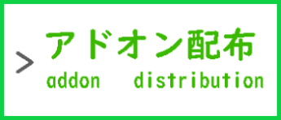
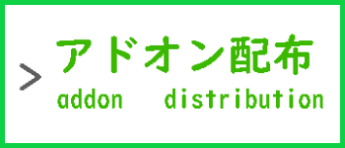

Minecraft 参加型
★ ＭＥＮＵ ★


 


Discordからの参加方法！
！こちら！からDiscordに参加してください。
Minecraft ワールドの参加方法
※Discordに参加出来ない方への参加方法です。
ワールドの管理人さん ➩ ゲーマータグ Ubukata sana
鯖の画像
ワールドでは、アドオンを使用してます。
サバイバルやクリエイティブで建築したりします。
開閉時間・予定
※毎週更新予定です。・更新されていない場合があります。
※急遽予定を変更する場合もあります。
| 開閉時間【 平日 】夕方・夜のみ |
19:00～23:00,24:00 |
開催中 |
| 開閉時間【 土日・祝日 】朝・昼のみ |
不定期～12:00 |
開催中 |
| LIVE配信【 土日・祝日 】夕方・夜 |
19:00～20:30 |
中止してます。 |
| 開閉時間【 土日・祝日 】夕方・夜 |
19:00～23:00,24:00 |
急遽開催中 |
| クリエ ➩ クリエイティブ |
建築クリエイティブ・配信無し |
| サバ【 夜 】➩ サバイバル・19:00～ |
建築サバイバル・LIVE配信予定 |
開閉予定表・2024/03/18～03/24
| 開閉曜日 |
開閉日時 |
ワールド情報 |
開閉可能かどうか |
| 月曜 |
03/18 |
クリエ |
🔴 |
| 火曜 |
03/19 |
クリエ |
🔴 |
| 水曜 |
03/20 |
クリエ |
🔴 |
| 木曜 |
03/21 |
クリエ |
🔴 |
| 金曜 |
03/22 |
クリエ |
🔴 |
| 土曜 |
03/23 |
クリエ |
🔴 |
| 日曜 |
03/24 |
クリエ |
🔴 |
こねこP公式サイト編集部 2023 - 2024